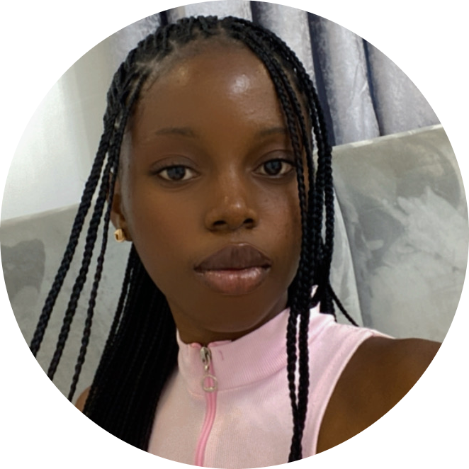

Florence Ladega

A Physicist and a Web Developer.
OBJECTIVE
A highly skilled and motivated professional with a background in Web Development and Physics, seeking a challenging position as a Web Developer and Physicist to utilize my expertise in both fields and contribute to innovative projects that push the boundaries of technology.
EDUCATION
- BSc.PHYSICS[in progress]- Obafemi Awolowo University[2021-ongoing]
- FULL STACK CERTIFICATION[in progress]-Udemy Web Development Bootcamp[ongoing]
SKILLS
Web development:
- Proficient in HTML5 and CSS3
- Experience with front-end development, creating responsive and user-friendly interfaces
- Ability to optimize website performance and conduct thorough testing and debugging.
Physics:
- Solid understanding of classical and modern physics principle
- Proficient in mathematics and statistical methods
- Experience with Python programming language
- Knowledge in numerical methods
- Strong problem-solving and analytical skills
- Ability to conduct experiments, analyze results, and draw meaningful conclusions
- Familiar with laboratory equipment and procedures
WORK EXPERIENCE
- Udemy Web Development Bootcamp[ongoing]-Open Source Contributor which includes bug reports and QA testing, Forum duties which includes Projects and community engagements.
- Research Assistant:
- Assisted in experimental designs, data collection and analysis for research projects
- Maintained laboratory equipments, ensuring proper functioning and safety protocols.
AWARDS
I was awarded the best 100 level student for physics department in 2021/2022. To see the award click here
Hobbies
Contact Me
{kind=link}